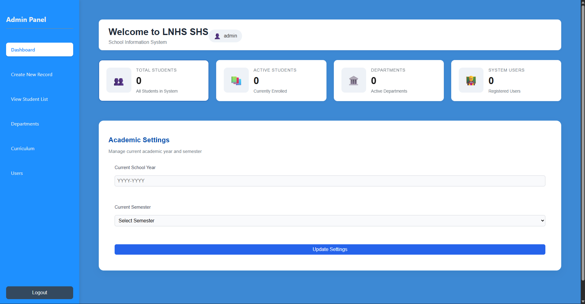
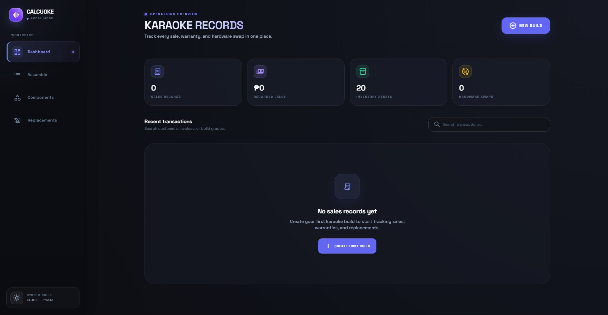
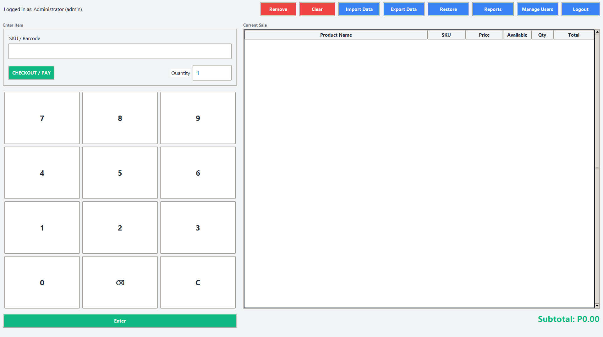
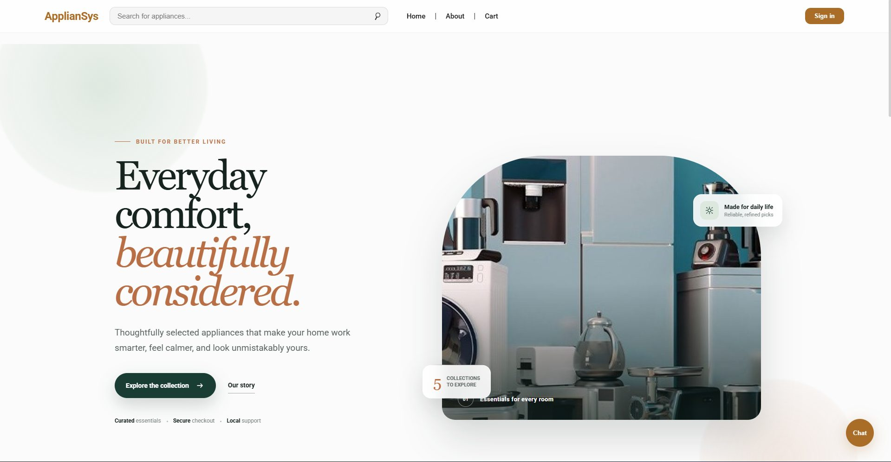
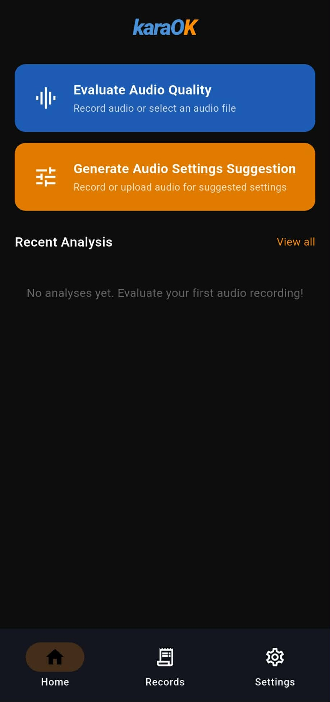

Languages
- Python
- PHP
- JavaScript
- TypeScript
- Dart
- SQL
I'm J.R. Bone, a full-stack developer focused on turning business needs into innovative solutions.
I design and build technology solutions—from a wide range of platforms to automation, cybersecurity, virtual operations, backend systems, and custom tools that enhances the quality of work.
My primary focus is application development. Experience with cybersecurity and virtual assistance helps me approach projects with stronger security awareness and attention to operational details.
From product development to technical support, I bring together the skills needed to move an idea from problem to working solution.
Custom websites built for speed, performance, and conversion. I create digital presences that look great and work perfectly.
Solving complex problems with clean, efficient code. I build applications and tools to automate your workflows.
Reliable administrative support to free up your time. I handle the details so you can focus on the big picture.
Identify vulnerabilities and improve your security. I perform thorough tests to ensure your systems are protected.
Build and train models to solve complex problems. I create intelligent systems that learn from data.
Languages, frameworks, infrastructure, and tools I have used to build the selected work below.
Open a project to see the problem it addresses, the approach I took, and the engineering decisions behind the result.
System Architecture
Request and data flowSenior high school administration involves connected student, department, curriculum, user, and academic-term records that become difficult to maintain in separate workflows.
I designed one authenticated administrative workspace for creating and reviewing student records while managing the academic structures those records depend on.
React handles the interface and validated forms, while an Express and Sequelize API organizes MySQL data and bcrypt protects stored credentials.
The resulting system gives administrators a consistent workflow for maintaining school records and configuring the active school year and semester.
System Architecture
Configuration-to-sale workflowBuilding and selling custom karaoke systems requires accurate component costing, stock tracking, customer records, warranties, and replacement history.
I turned the process into a guided configuration workflow that calculates setup costs and connects each sale to its components, customer, photos, and warranty information.
A typed React interface keeps complex forms predictable, while Express and MySQL preserve the relationships among inventory, configurations, sales, and hardware swaps.
Calcuoke provides a traceable workflow from initial system assembly through sale, printable warranty generation, and after-sales component replacement.
System Architecture
Offline desktop workflowSmall retailers need dependable checkout and inventory tools even when internet access is unavailable, without sacrificing reporting, access control, or recoverability.
I built an offline-first desktop application covering barcode and SKU lookup, cart and payment workflows, stock updates, reports, user management, and audit history.
Python and Tkinter provide a lightweight desktop UI, SQLite keeps business data local, and dedicated import, export, backup, and restore tools protect portability.
PyPOS packages the daily retail workflow into one installable application that can operate independently of a hosted service.
System Architecture
Storefront and operations flowAn appliance storefront must coordinate product discovery, customer accounts, inventory, checkout, fulfillment, order tracking, and administrative reporting.
I built the customer storefront and REST API as connected journeys, including search, database-backed carts, delivery or pickup, mock GCash payments, and order status.
React, Material UI, and Redux Toolkit manage the customer experience; Express and MySQL support role-based admin tools, stock controls, reports, maps, and document exports.
The platform connects customer purchasing and internal operations while providing AI-assisted support and a clear administrative view of products, orders, and sales.
System Architecture
Cross-platform analysis pipelineKaraoke audio quality is difficult to judge consistently because useful measurements such as loudness, noise, and spectral balance are technical and hard to interpret.
I designed a cross-platform Flutter workflow for recording or selecting audio, submitting it for analysis, and presenting scores, suggestions, waveforms, and spectrograms.
A Flask API and MySQL backend support the client, while Librosa, NumPy, SciPy, Pandas, and Matplotlib power the DSP pipeline. JWT, Argon2id, OTP, and secure storage protect access.
The application can evaluate core audio characteristics and generate visual reports. The mobile experience, administration console, and production deployment continue to be refined.

01School information system
An administrative information system for organizing senior high school student records, departments, curriculum, users, and academic settings.
Built the authenticated admin workflow for creating and reviewing student records, managing departments and curriculum, administering users, and configuring the active school year and semester.

02Full-stack karaoke system builder
A full-stack karaoke system builder for configuring setups, managing inventory, recording sales, and tracking warranties and replacements.
Built a karaoke configuration and sales management platform featuring automatic cost calculation, component inventory CRUD, customer records, photo uploads, hardware swap tracking, and printable PDF warranty certificates.

03Desktop point-of-sale system
An offline desktop point-of-sale and inventory management system for small retail businesses.
Built a complete POS application with secure authentication, barcode and SKU lookup, cart management, multiple payment methods, inventory tracking, sales reports, Excel import and export, database backup and restore, user administration, and audit logging.

04Full-stack e-commerce platform
A full-stack appliance e-commerce platform with product discovery, secure customer accounts, cart and checkout workflows, order tracking, administrative management, reporting, and AI-assisted customer support.
Built the customer storefront and REST API, including authentication, product search and categories, database-backed carts, delivery and pickup checkout, mock GCash payments, order management, stock controls, sales reports, role-based admin tools, and an AI chatbot.

05Mobile audio analysis app
A mobile audio analysis tool that evaluates karaoke sound quality and turns technical measurements into clear scores, visual reports, and recommended audio settings.
Built the record-and-upload workflow, empirical five-feature grading for loudness, bass, treble, sharpness, and flatness, plus noise and distortion checks, waveform and spectrogram visualizations, saved analyses, and settings suggestions.
Let’s work together
Tell me what you are building, the problem you want to solve, and where you need a developer’s help.